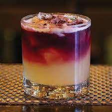

Pine Pepper Crush

The classic New York Sour goes to Mexico and gets an upgrade with ground black pepper and muddled pineapple.
Ingredients
- 8 pineapple pieces (about the shape of small lime quarter)
- 2 grinds black pepper
- 1 3/4 ounces blanco tequila (such as Partida)
- 1/4 ounce lime juice, freshly squeezed
- 1/2 ounce agave nectar syrup (1 part agave nectar and 1 part water)
- 1 ounce 10-year-old tawny port, to float
- Garnish: Cracked black pepper
Steps
- In a shaker, muddle the pineapple and add two small grinds of black pepper.
- Add the tequila, lime and agave nectar syrup with ice and shake until well-chilled.
- Double-strain into a rocks glass over fresh ice.
- Float the port on top.
- Garnish with a twist of black pepper.